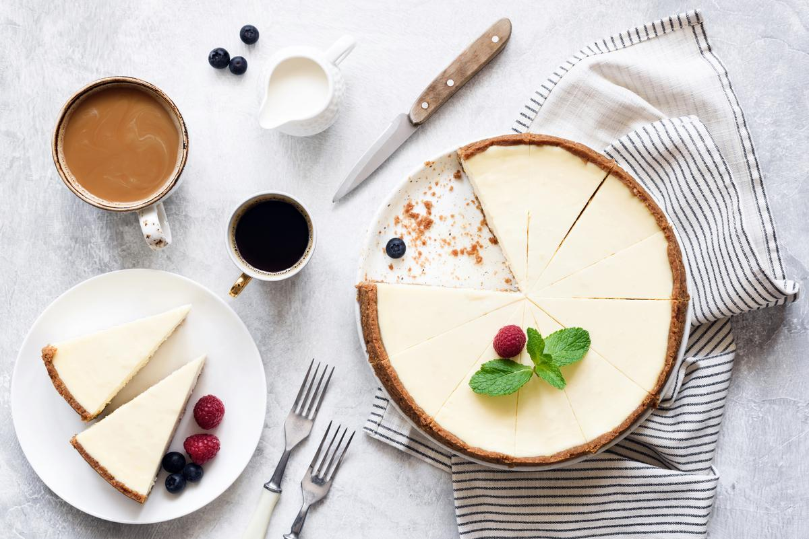

ચીઝ કેક

વર્ણન
- પૂર્વ તૈયારીનો સમય: 20 મિનિટ
- પકાવવાનો સમય: 50 મિનિટ
- કેટલા લોકો માટે: 5
સામગ્રી
- ૨૦૦ ગ્રામ કિ્મ ચીઝ
- ૧૫૦ ગ્રામ વિપ કિ્મ
- ૨૦૦ ગ્રામ સ્ટોબેરી નો પલપ
- ૨૦ મેરી બિસ્કીટ
- ૧૦૦ ગ્રામ વ્હાઈટ ચોકલેટ
વાનગી
- સૌ પ્રથમ બિસ્કીટ ને મિક્સર માં પીસો ને નીચે થી ઓપન ટીન નો ઉપયોગ કરો ને તેમા બિસ્કીટ ને ઉમેરો
- વ્હીપ કિ્મ ને બિટ કરી ને તૈયાર કરો
- વ્હીપ કિ્મ માં ચીઝ કિ્મ ઉમેરો ને બિટ કરો, વ્હાઈટ ચોકલેટ ને મેલટ કરી તેમાં થોડું અમુલ ફે્સ કિ્મ ઉમેરો
- કિ્મ ના ૩ ભાગ કરો, સ્ટોબેરી ના પલપ બે ભાગ માં ઉમેરો
- એક સફેદ લેયર, એક લાઈટ પીનક, એક ડાકઁ પીન્ક લેયર કરો
- સ્ટોબેરી ના પલપ ને ૧ ચમચી અગર અગર ગરમ કરી ને કિ્મ પર રેડો
- ૪ કલાક ફિજ માં સેટ કરો